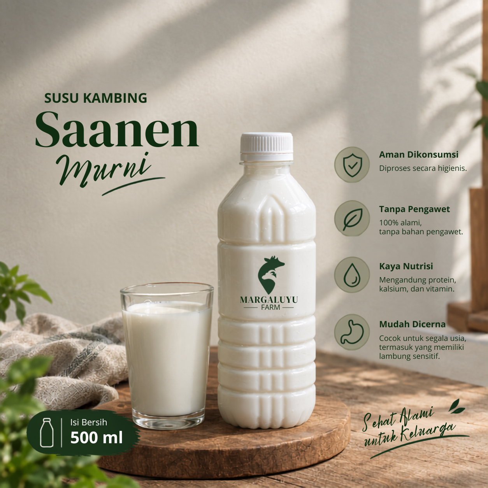

Aroma menyengat pada susu kambing umumnya bukan disebabkan oleh jenis kambing, melainkan dari cara perawatannya.

Rasanya manis lembut dengan sisa rasa (aftertaste) yang bersih, tanpa pahit atau asam. Teksturnya creamy, lebih kental dari susu sapi tapi tidak seberat susu kambing pada umumnya.
Aromanya ringan, dengan rasa yang segar dan alami sehingga nyaman diminum.
Aroma susu kambing yang menyengat dapat dipengaruhi oleh kondisi lingkungan, kualitas pakan, dan higienitas saat memerah. Di kandang kami, kambing diberi rumput dan jerami segar. Area pemerahan dijaga tetap bersih, dan setelah diperah, susu segera didinginkan hingga 4°C dalam waktu 30 menit untuk menjaga kualitas dan kesegarannya.
| Susu Saanen | Susu Etawa | Susu Sapi | |
|---|---|---|---|
| Rasa | Manis, lembut, alami | Lebih tajam dan kuat | Familiar, standar |
| Aroma | Segar,creamy | Aroma kambing lebih terasa | Netral |
| Tekstur | Creamy, mudah ditelan | Sangat kental, lemak lebih tinggi | Lebih cair |
| Pencernaan | Cenderung lebih ringan dicerna | Cocok untuk diolah lebih lanjut | Laktosa tinggi, sering sulit dicerna |
Susu segar kami diperah dan dikirim di hari yang sama. Yuk, pesan sekarang.
Pesan Susu Saanen